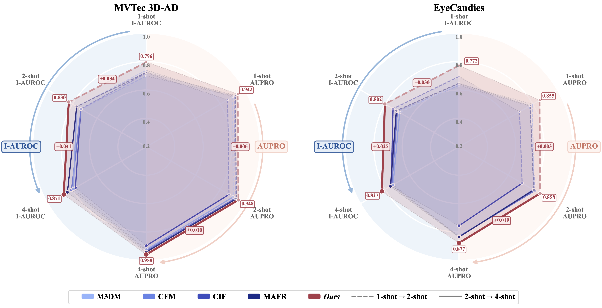
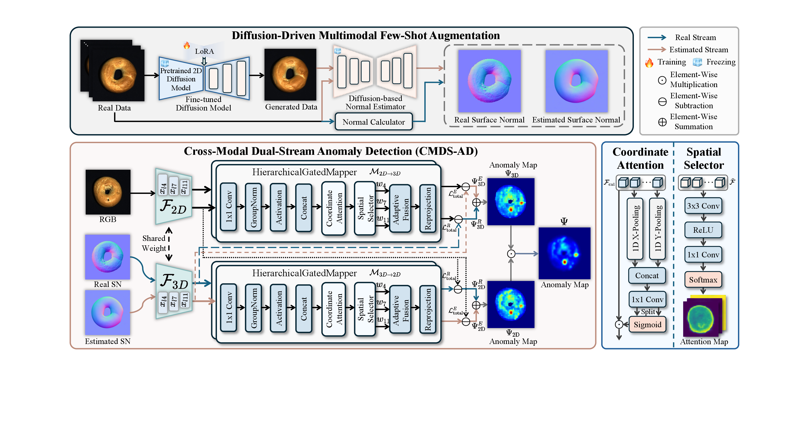
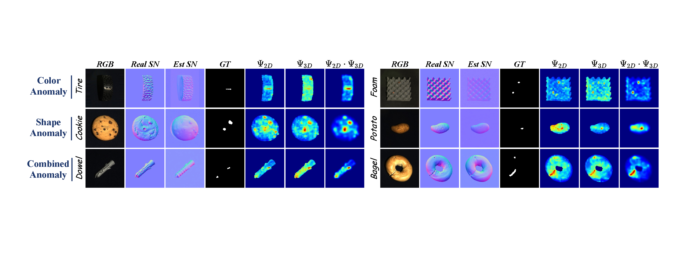
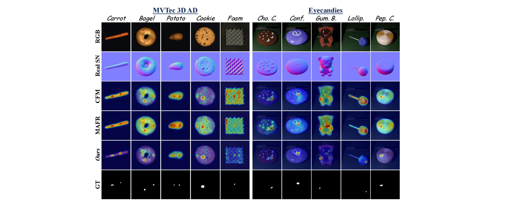
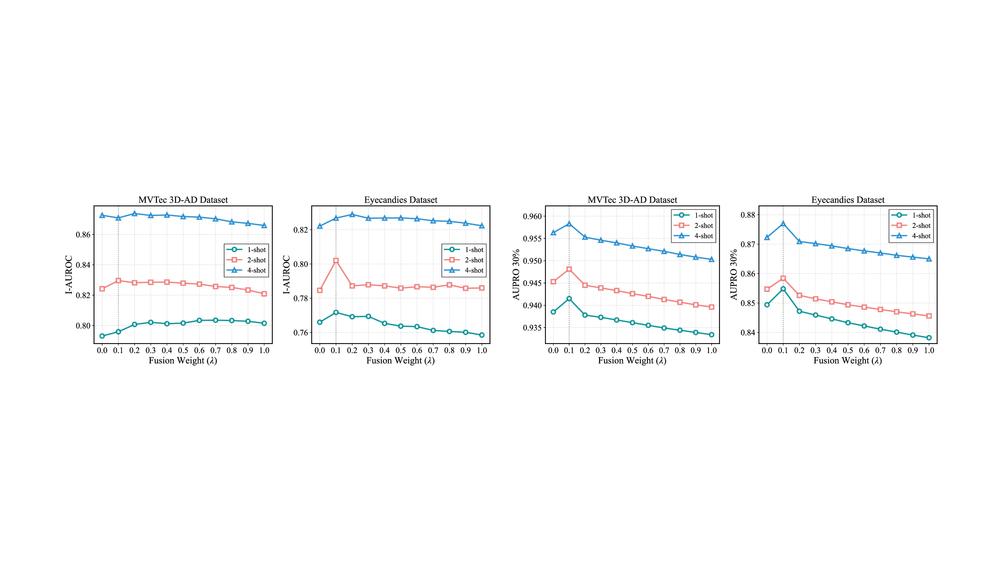

1
Shenzhen University
Shenzhen, Guangdong 518060, China
ECCV 2026 Project Page
CMDS-AD tackles extreme few-shot multi-modal anomaly detection by decoupling low-frequency structural priors from high-frequency defect cues. A diffusion normal estimator anchors a stable estimated stream, a real stream preserves fine anomalies, and a coordinate-aware cross-modal mapper aligns RGB and 3D signals with higher precision.
* Corresponding author: Deyu Zeng
Shenzhen, Guangdong 518060, China
Guangzhou, Guangdong 510725, China
Guangzhou, Guangdong 511453, China
caijunhao27@gmail.com, 2500092013@mails.szu.edu.cn, liangqiwei2022@email.szu.edu.cn, xzhong@szu.edu.cn, zzwu@szu.edu.cn

Overview
Few-shot anomaly detection remains difficult because existing multi-modal methods tend to process all spatial content uniformly, mixing stable macroscopic structure with high-frequency localized defect signals. Under severe data scarcity, this creates cross-modal misalignment and inflated false-positive responses.
CMDS-AD reframes the problem with a dual-stream design. A LoRA-guided diffusion model augments scarce RGB data, while a diffusion-based normal estimator provides a structurally stable estimated stream that behaves like a non-linear low-pass filter. This auxiliary stream anchors normality, allowing the real stream to focus on micro-defects without losing cross-modal consistency.
A Coordinate-Aware Hierarchical Feature Mapper aligns RGB and 3D semantics across multiple scales, and a multiplicative anomaly fusion rule keeps only the spatial regions that are supported by both modalities, sharply reducing isolated modality-specific noise.
The normal estimator is repurposed as a low-frequency prior, not just a generator, giving the method a stable structural template even in the 1-shot regime.
The estimated stream captures low-frequency normal structure, while the real stream preserves coupled high- and low-frequency content to localize subtle anomalies.
Element-wise multiplication of 2D and 3D anomaly maps acts as a strict spatial gate, suppressing false alarms and improving boundary sharpness.
Method

Stable Diffusion v2.1 is LoRA-finetuned to synthesize diverse RGB samples from very limited normal data. Marigold then predicts estimated surface normals for both real and generated images.
The estimated stream acts as a purely low-frequency anchor, while the real stream retains coupled detailed geometry. Their complementary anomaly responses are kept independent until final fusion.
Multi-scale ViT features from layers 4, 7, and 11 are aligned through coordinate attention and spatial selection, which preserves positional precision while closing the 2D-3D semantic gap.
Weighted real and estimated anomaly maps are merged within each modality, then multiplied across 2D and 3D to keep only jointly supported defect regions.
Results
On MVTec 3D-AD, CMDS-AD reaches 79.6% I-AUROC and 94.2% AUPRO@30% in the 1-shot setting, then scales to 87.1% and 95.8% at 4-shot. The method is especially strong on geometrically complex categories such as Bagel and Rope.
On EyeCandies, CMDS-AD establishes a new state of the art across all few-shot settings, delivering 77.2% I-AUROC and 85.5% AUPRO@30% in the 1-shot setting and reaching 82.7% I-AUROC at 4-shot.
The estimated stream provides a stable structural guide, which helps the real stream avoid confusing background texture or sensor noise with true defects. The final multiplicative fusion then removes isolated modality-specific responses, resulting in sharper boundaries and fewer false alarms in normal regions.
This behavior is visible both on texture-driven defects and on subtle geometric anomalies that are easy to miss from RGB alone.


Analysis

0.1 consistently provides the
best balance across datasets and shot settings.
Under the 4-shot setting, the full system reaches 0.958 AUPRO@30% and 0.410 AUPRO@1%, confirming that the real stream, estimated stream, and feature mapper work best together.
Replacing the proposed mapper with a standard MLP degrades localization metrics, showing the importance of hierarchical gating and coordinate-aware alignment.
Element-wise multiplication achieves 0.989 P-AUROC and 0.958 AUPRO@30%, outperforming addition for fine-grained localization under strict false-positive constraints.
Citation
@inproceedings{cai2026cmds,
title = {CMDS-AD: Cross-Modal Dual-Stream Decoupling for Few-Shot Anomaly Detection},
author = {Cai, Junhao and Chen, Junyu and Zeng, Deyu and Pang, Junhao and Liang, Qiwei and Zhong, Xiaopin and Wu, Zongze},
booktitle = {European Conference on Computer Vision (ECCV)},
year = {2026}
}This research work was financially supported in part by the Guangdong Major Project of Basic Research under Grant 2023B0303000009, the NSFC Youth Fund Project under Grant 62403326, the Shenzhen Fundamental Research Fund under Grant JCYJ20230808105212023, the Research Team Cultivation Program of Shenzhen University under Grant 2023JCT004, and the Shenzhen University 2035 Program for Excellent Research under Grant 00000224.
Project materials on this page are adapted from the manuscript figures and content provided in the ECCV 2026 paper directory.